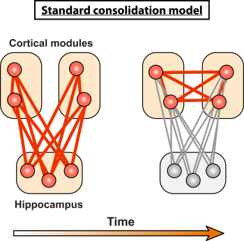

8.5: Stages of Memory
This section gives a brief overview of memory processing stages, including encoding, consolidation, and retrieval.
Memory Encoding
Encoding refers to the process of converting incoming information into a mental representation that the brain can retain. In real life, you are presented with countless stimuli simultaneously. Imagine walking down a busy street, and the number of different sights, smells, and sounds you experience. Storing memories is an energetically costly process, and we are limited in the fact that all of our sensory inputs cannot possibly get encoded. Instead, our memory systems have evolved to adaptively encode the most salient information, such as environmental cues associated with threatening or rewarding experiences.
Decades of research have established that emotional memories are more strongly and vividly remembered than neutral memories, which may be partially driven by the preferential encoding of emotional events. The neurobiological mechanisms that prioritize emotional events include arousal from stress hormones (e.g., noradrenaline), fight-or-flight-related neurotransmitters (e.g., norepinephrine), and increased recruitment of the amygdala. These may drive the enhanced encoding of the most salient features of emotional events (Clewett & Murty, 2019; Mather & Sutherland, 2011).
Memory Consolidation
Memory consolidation refers to the process where short-term memories are transformed into long-term memories. While many theories have addressed how memories are stabilized over time, systems consolidation theory has emerged as the dominant perspective. Systems consolidation theory suggests that memories are stabilized as a result of interactions between the hippocampus and different regions of the neocortex (Alvarez & Squire, 1994; McClelland et al., 1995; Cowan et al., 2021). More specifically, the hippocampus is initially crucial for storing and retrieving memories; but over time, these memories become less dependent on the hippocampus and shift to being stored in the neocortex (Figure 13). Systems consolidation aligns with Patient HM’s memory capacity. Recall HM’s temporally graded retrograde amnesia, where he lost memories from the two years before his surgery, but maintained memories from his more distant past. The memories from shortly before the surgery still depended on the hippocampus, so were lost when his hippocampi were removed. Conversely, his childhood memories had fully transferred to the neocortex and no longer involved the hippocampus, so they were maintained after removing the hippocampus.

Memory Retrieval
The process of accessing and recalling information previously encoded and stored in memory is known as retrieval. Memory retrieval is crucial for allowing people to use past information, knowledge, and skills in everyday life and to integrate learning of new information. Although memory retrieval is typically thought of as the conscious retrieval of stored facts and life events (i.e., declarative memories), retrieval also happens with procedural memories, as when you recall or perform a skilled action. Memory retrieval can be differentiated from memory encoding using a cued word-recall test. Imagine being given a list of 50 words to memorize, where the words belong to a few different conceptual categories (such as cinnamon, pepper, and curry, which fall under the category ‘food flavors’). In a free-recall test, where you’re asked to write down as many words as possible from memory, you might remember about 30% of the words. However, in a cued-recall test, where you’re cued with categories (like ‘food flavors’), you’d likely perform much better, possibly recalling 75% of the words. Higher scores in cued-recall show how retrieving information is helped by cues that activate contexts and associations between items encoded in memory.
State- and context-dependent memory. State-dependent memory refers to the phenomenon where memory retrieval is most effective when a person is in the same state of consciousness as when the memory was formed. This applies to states induced by psychoactive substances like alcohol, as well as moods or other internal conditions. Context-dependent memory is related but instead of internal conditions, it involves external environments—memory retrieval is most effective when the person is in the same external environment as when the memory was formed. For example, in state-dependent memory, information studied while caffeinated is best retrieved in a similar state of caffeination. Whereas in context-dependent memory, information studied in one room is best retrieved in that same room. Biologically, memories are encoded through changes in synaptic strength and stored as spatiotemporal patterns of activity across neuronal networks. Being in the same state or context activates part of the neuronal pattern associated with the memory, facilitating full activation of the memory trace for retrieval.
Text Attributions
Parts of this section were adapted from:
Hedges, V. (2022). Memory Systems. In Introduction to Neuroscience. CC BY-NC-SA 4.0 https://openbooks.lib.msu.edu/introneuroscience1/chapter/memory-systems/
Lim, A., & Graykowski, D. (2021). Learning and Memory. In Open Neuroscience Initiative. CC BY-NC 4.0 https://static1.squarespace.com/static/56555dbee4b0f0c1a002808a/t/60537c185d98a2151537dbba/1616084000764/Open+Neuroscience+Initiative+-+Chapter+13+-+Learning+and+Memory.pdf
Scholarly Community Encyclopedia (2022). State-Dependent memory. Retrieved July 5, 2024 from https://encyclopedia.pub/entry/30504 CC BY-SA 3.0
Media Attributions
- Standard Consolidation model is licensed under a CC BY-NC-SA (Attribution NonCommercial ShareAlike) license